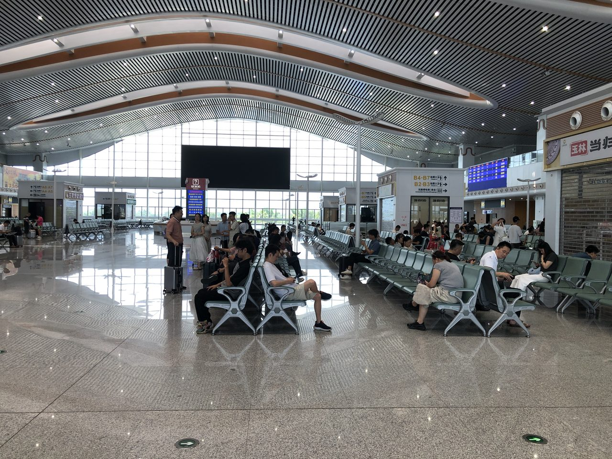
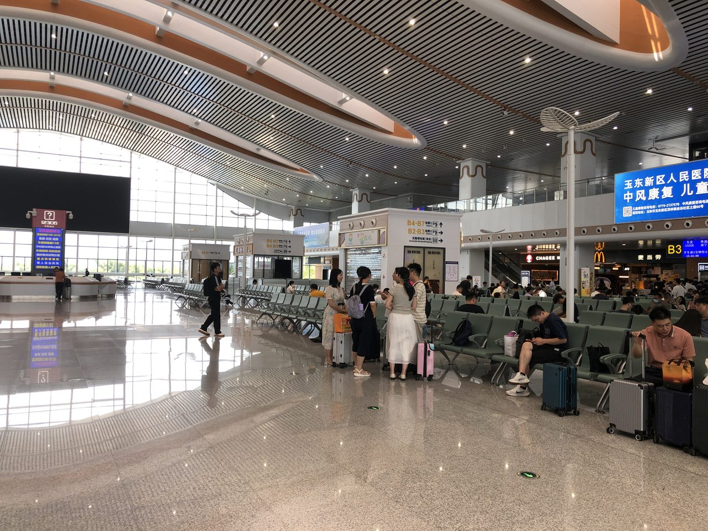

2024年12月30日，G5514次列车缓缓驶入兴业南站——兴业正式告别没有高铁的历史。
通车一年间，南玉高铁全线累计发送旅客275万人次（国铁南宁局数据）。对于一个人口仅59万的县城来说，高铁带来的不只是出行便利，而是整个商业格局的重新洗牌。

"高铁效应"如何改写兴业？
关键转折：南玉高铁让兴业从"地理上的偏远县"变成"南宁一小时生活圈成员"。兴业南站的启用，把这座小城推到了平陆运河经济带的前沿位置。
根据兴业县政府工作报告和官方数据，"两铁三高五省道"路网格局已经成型。"融入南宁一小时生活圈"——这对兴业县意味着什么？
- 人才回流加速：以前在南宁工作的兴业人，周末回家一趟折腾大半天；现在一小时就到，周末回乡频次大幅提升
- 商务交流便利化：南宁的企业主可以当天往返兴业考察项目、参观工厂
- 招商环境质变："通高铁了"本身就是兴业对外招商的一张新名片


兴业的产业底色：小而精的工业县
兴业虽小，产业却不弱。了解它的产业结构，才能理解哪些品牌在这里投广告效果好：
- 钙基新材料——兴业拥有丰富的碳酸钙资源，正在打造钙基新材料产业集群
- 健康食品——大平山健康食品产业园，食品加工产业链完整
- 化工新材料——兴业重点发展的工业方向之一
- 优质农牧产品——本土特色农产品品牌化正在推进
概括来说，兴业是一个以工业为基础、食品为特色的县域经济单元。这和玉林市区的"大而全"、横州的"茉莉花一枝独秀"形成了鲜明差异。
兴业南站广告资源：精而不多
兴业南站的广告点位规模是三站中最小的：候车厅拉布灯箱8个、出站厅及地道灯箱7个，合计15个点位。月费在2-4万元区间。

小≠不好。恰恰相反：
- 触达精准度最高——到兴业的人基本都是"目的明确的到达者"：返乡、商务考察、探亲。广告被"注意到"的概率比大站更高
- 价格门槛最低——2万元起投，中小企业也能轻松上车
- 独占效应强——点位少意味着竞争少，你的品牌基本独占旅客注意力
最适合在兴业南站投放的品牌类型
工业设备/B2B供应商
兴业正在推进工业振兴，大量钙基、化工、食品加工企业需要设备和原材料供应商。如果你是做工业设备、检测仪器、包装材料的企业——在兴业南站投放广告，等于把广告放在你客户"出差的路上"。
本地消费+品质生活
59万人口的市场虽然不大，但消费升级的趋势明确。本地餐饮、建材家居、教育培训、汽车销售——这些都是"小城大生意"的典型品类。出站通道灯箱月费2万元，在这个体量的市场做精准触达，CPM（千次曝光成本）极低。
区域农产品品牌
兴业正在推进特色农牧产品品牌化。本地的农产品企业如果希望从"卖原料"升级到"做品牌"，高铁站广告是成本最低的品牌展示方式之一。
一个被低估的价值："窗口效应"
县城品牌有一个共同的痛点："好是好，就是没人知道"。
兴业南站虽然客流不大，但经过的旅客来自全国——去南宁出差的、去粤港澳探亲的、来考察投资的。他们在站台上看到的广告，可能就是他们回去后跟人聊起的"那个兴业的企业"。
对于想走出本地、对接更大市场的兴业企业来说，高铁站广告是"性价比最高的对外窗口"。